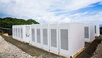

0.3 Problems Facing Energy
Supply. Sustainability. Economics. Health.
Finding energy, using it wisely, increasing wealth, all while safeguarding our well-bring.
Supply is a long-term and a short-term problem that is unique to each energy source. Will we finally run out of coal to dig up or oil to pump out? Will we run out of uranium to dig out of the ground? Solar energy is subject to the rotation of the earth (night and day), the tilt of its rotation (summer vs. winter), and local weather conditions (rainy vs. sunny).Wind power is similarly subject to local weather (calm days vs. stormy days vs. steady winds). This intermittency is one of the major drawbacks for solar and wind. Hydropower requires predictable weather patterns to ensure an adequate water supply and thereby ensure a stable power supply.
The power grid’s energy demand is continually varying as consumers turn devices off and on. Often the demand does not match the supply – both conditions of too much or too little demand occur continually. The grid consists of base load generation that provides a stable foundation with other sources contributing as they are needed or able. Nuclear, hydroelectric, and many fossil fuel plants make up the base load which is supplemented by the more intermittent generators such as solar, wind, or tidal. Small (comparatively) variations are compensated for by variations in the grid frequency (~60 Hz in North America) by having the generators spin at slightly different frequencies. But larger variations (a hot, summer day with large air conditioning demands across half the continent) require power sources that can be quickly brought up to speed. These “peaker plants” are commonly powered by natural gas combustion. All of this has to be carefully monitored and continually adjusted by all participants.
Economics is another big driver for our energy. The question about fossil fuel supply is perhaps more correctly worded as “when will we run out of fossil fuels
that are economically accessible”? How expensive is it to build a new nuclear plant? What about the costs associated with the spent fuel rod storage? What about the costs of pollution arising from fossil fuel combustion? What kind of government subsidies will be needed to develop solar and wind generation to make it comparable in cost to the more mature industries of fossil fuel, nuclear, or hydroelectric?
And what about the health of people? or the health of the planet? How do different energy sources impact those issues? Does living next to a fossil fuel plant impact the health of residents? What about living close to a wind farm? Many feel that the sound they generate impacts their health. Are nuclear power plants dangerous? Or do their zero-operating carbon emissions outweigh those concerns? Fossil fuel combustion is leading to a dramatic, rapid rise in CO2 in the atmosphere where greenhouse gases are contributing to climate change. What are the implications of climate change? Our energy use patterns are clearly contributing to it. What should be done?

Energy can be produced by stationary power plants and distributed electrically. It can also be produced by mobile power plants used to move ships, planes, trains, and automobiles. How do we couple the different demands of mobile and stationary power plants and their fuel sources and choices?
One additional aspect to the grand challenge of energy is to address those issues common to mobile power plants and intermittent producers: how to store energy for future use. For instance, how can we capture and store solar energy when the sun is bright during the summer daylight and then use it during the long winter nights? What is the best method to store and transport energy for powering cars or planes? These and many more issues are chemical in their origins and solutions.